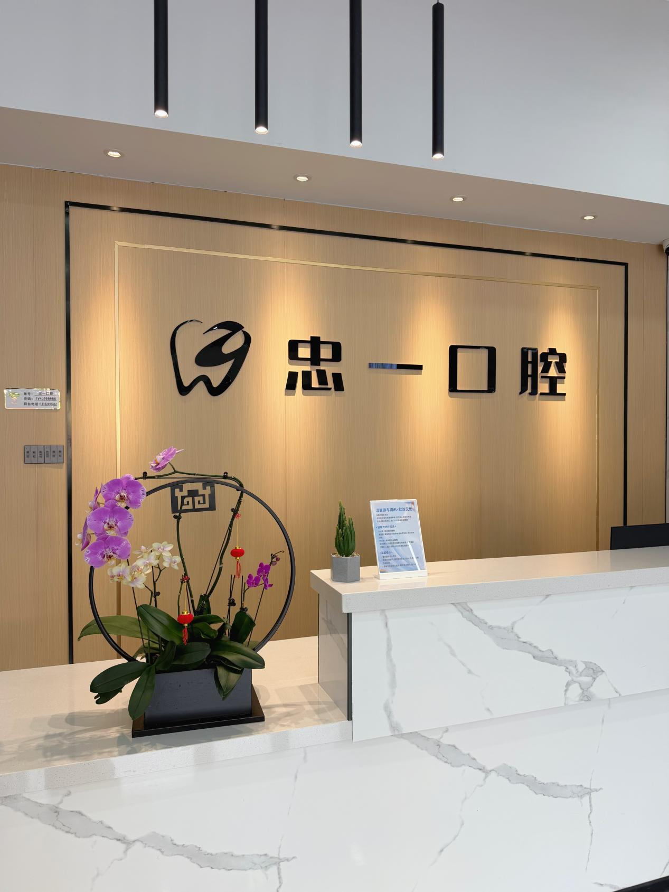
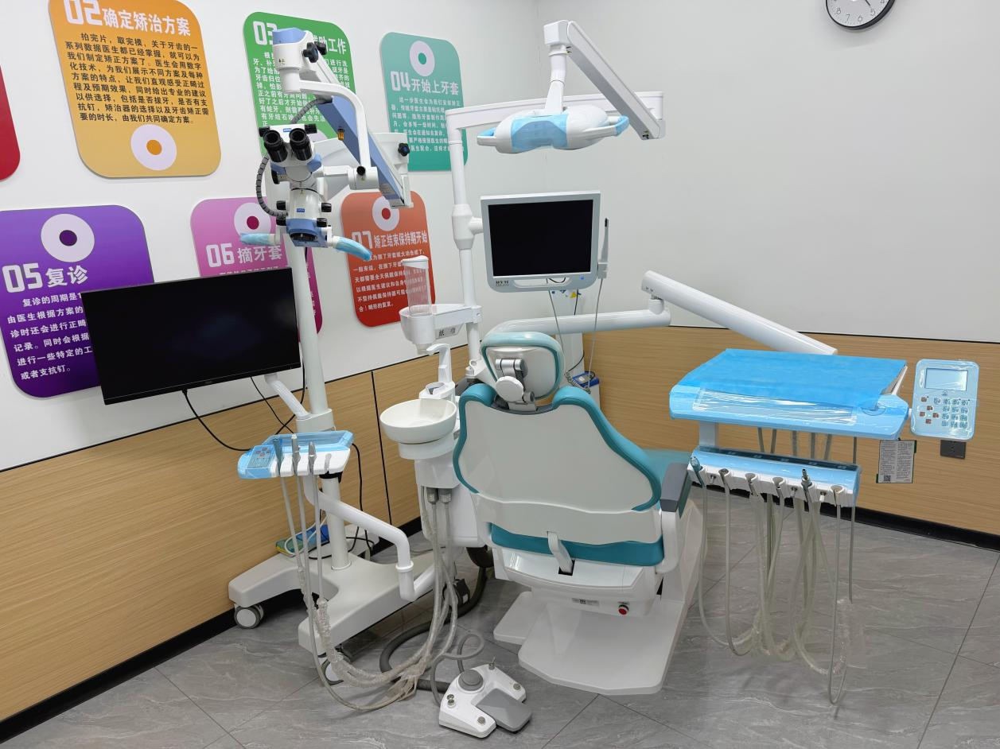
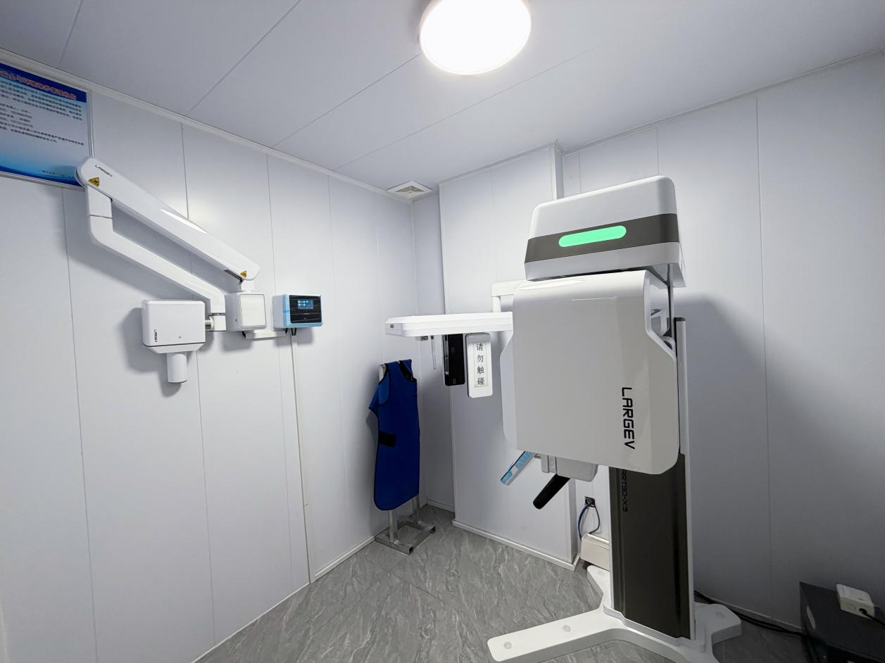
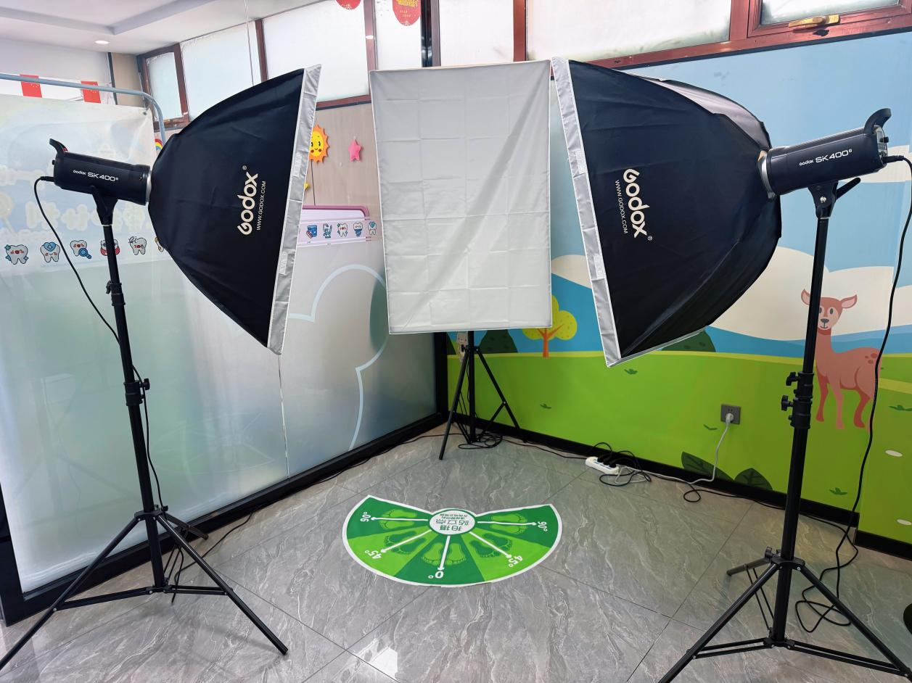
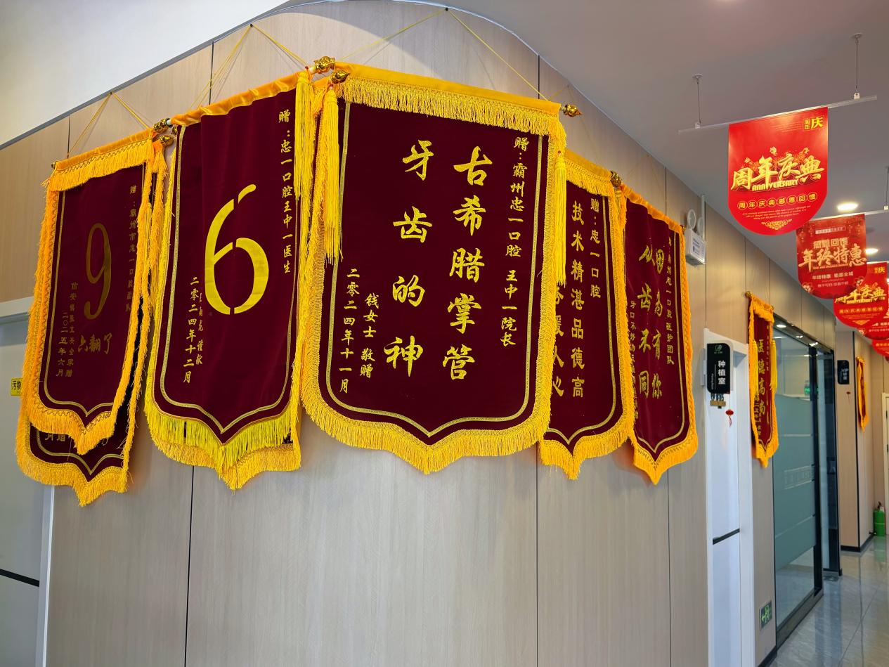

牙齿矫正
涵盖金属托槽、隐形矫正（隐适美/时代天使/正雅）、儿童早期干预等多种方式。特邀北大口腔正畸专家闾鑫锋定期坐诊，结合数字化方案设计，为青少年与成人定制高效美观的矫正方案。
- 金属托槽矫正
- 隐形矫正（隐适美/时代天使/正雅）
- 儿童早期干预矫治（ETA）
- 正雅颌位重建技术
- 微创支抗钉技术
忠一口腔创立于2024年，是霸州本地专业数字化口腔诊疗机构，坐落于河北省廊坊市霸州市兴华北路1816号，地理位置优越、交通便捷，是当地居民信赖的口腔诊疗机构。
自成立以来，忠一口腔始终坚持"以患者为中心、以医疗质量为核心、以专业技术为支撑"的发展理念，致力于为霸州及周边群众提供安全、舒适、高品质的一站式口腔诊疗服务。
团队定期参加国内口腔学术交流与技术培训，不断学习前沿诊疗理念与先进技术。门诊环境整洁明亮、布局合理，严格执行无菌诊疗、一人一用一消毒的院感标准，全面保障患者就诊安全。
坚持"专业、严谨、负责、温暖"的行医准则，为每一位患者量身定制个性化治疗方案，做到诊断精准、方案透明、过程舒适、效果可预期。推行全程一对一接诊、预约就诊、术后随访、健康宣教等贴心服务，让更多人在家门口就能享受到高品质、专业化的口腔医疗服务。
整洁明亮、布局合理的诊疗环境，严格执行无菌诊疗、一人一用一消毒的院感标准。











忠一口腔以"忠于心，精于齿"为理念，为全年龄段患者提供一站式、精准化的口腔健康解决方案。
涵盖金属托槽、隐形矫正（隐适美/时代天使/正雅）、儿童早期干预等多种方式。特邀北大口腔正畸专家闾鑫锋定期坐诊，结合数字化方案设计，为青少年与成人定制高效美观的矫正方案。
由瑞士Straumann、美国HIOSSEN、瑞典Nobel三大种植系统认证医师陈帅主诊，依托CBCT三维数据实现精准种植导板设计，单颗/多颗/全口缺失牙均可修复，微创舒适，即刻恢复咀嚼功能。
超薄美学贴面、全瓷冠、树脂补牙，在显微镜下精细化操作，兼顾美观与功能，还原牙齿自然形态与色泽。郭磊医生为门诊美学修复骨干，王中一医生获微创美学树脂修复"最佳贡献奖"。
窝沟封闭、涂氟预防、儿童早期矫治，温柔诊疗环境配合专业儿童口腔医生，让孩子轻松看牙，远离牙病困扰。王中一医生为ETA儿童早期矫治认证医师。
复杂阻生齿微创拔除、显微镜下根管治疗、热牙胶充填技术，创伤小、恢复快。周建娜医生为牙体牙髓与牙周诊疗专项骨干，郭磊医生精通现代化显微镜根管治疗。
针对缺牙患者定制舒适、贴合、易清洁的活动义齿方案，兼顾功能恢复与佩戴体验，帮助中老年患者重拾咀嚼自信。周建娜医生擅长活动义齿修复。
忠一口腔拥有一支由北大口腔专家领衔的专业医疗团队，每位医生均具备正规口腔医学教育背景和丰富临床经验。
忠一口腔创始人、门诊主任，中华口腔医学会会员，本科毕业于河北北方学院口腔医学专业。先后在邢台、廊坊、北京等地口腔机构进修，跟随刘凤顺老师潜心学习多年，后跟随首都医科大学正畸学硕士闾鑫锋老师深耕正畸技术。
四大隐形矫正认证医师：正雅隐形矫正、时代天使隐形矫正、隐适美隐形矫正、ETA儿童早期矫治。同时是正雅隐形矫治星级医生，拥有正雅颌位重建技术、GS技术进阶、正畸支抗钉临床应用等多项专项认证。
完成台湾Mico One正畸支抗钉、全国规范化微创种植精英班等前沿课程培训，2018年完成微创美学树脂修复专项培训并获"最佳贡献奖"。
擅长领域：成人及青少年牙齿矫正、隐形矫正、儿童早期干预矫治、种植修复、美学修复
北京大学医院口腔中心正畸科副主任医师，本科及研究生均毕业于首都医科大学，师从著名口腔正畸学泰斗厉松教授，是国内正畸领域的资深专家。
隐适美认证医师，曾赴香港参加Invisalign拔牙病例专项研讨会，作为行业专家受邀出席时代天使2018"精准·进化"A-Tech大会。
已发表核心期刊文章4篇，申请实用新型专利2项，临床经验极为丰富。中华口腔医学会会员、北京口腔医学会正畸专委会会员。
擅长领域：成人及青少年错颌畸形矫治、隐形矫正、拔牙病例正畸治疗
闾鑫锋专家定期坐诊忠一口腔，为霸州百姓带来与一线城市同步的三甲医院正畸诊疗服务，让大家在家门口就能看北大正畸名医。
瑞士Straumann、美国HIOSSEN、瑞典Nobel三大国际种植系统认证医师，于天津口腔机构从业多年口腔种植手术及修复诊疗，积累了丰富的临床手术经验。
深耕口腔种植领域，以数字化精准舒适种植修复为专长。同时精通各类牙齿微创拔除、牙体缺损美学修复及常见牙周疾病治疗。
擅长领域：数字化精准种植、单颗/多颗/半口/全口种植修复、微创拔牙、牙周治疗
中华口腔医学会会员，毕业于华北理工大学口腔医学专业，曾任职于霸州第四人民医院口腔科，拥有扎实的公立医院临床基础与丰富的一线诊疗经验。
门诊美学修复骨干，擅长美学贴面、显微镜下备牙、美学树脂补牙。系统学习全冠修复实操课程，精通现代化显微镜根管治疗、热牙胶充填技术。
擅长领域：美学贴面、全瓷冠修复、显微镜根管治疗、树脂美学修复、阻生齿微创拔除
口腔医学专业主治医师，毕业于河北北方学院口腔医学专业，是忠一口腔临床骨干医师之一。
门诊牙体牙髓与牙周诊疗专项骨干，擅长牙体牙髓疾病、根尖周疾病、牙周病系统治疗。同时精通阻生齿微创拔除、口腔美学修复、活动义齿修复。
擅长领域：牙体牙髓治疗、牙周系统治疗、根管治疗、美学修复、活动义齿修复、微创拔牙
门诊配备全套高端诊疗设备，实现从检查、诊断到治疗的精准化、可视化、微创化。
将根管治疗、美学备牙放大20-30倍，精准处理细微结构，提升治疗成功率与远期效果。
告别传统取模的不适，3分钟快速采集口腔数据，方案可视化，复诊更高效。
三维立体成像，精准评估颌骨条件、种植位点与根管形态，为种植、正畸提供科学依据。
保障种植手术稳定高效，实现微创精准种植。
实现牙周病的舒适、规范化治疗。
高清记录诊疗前后对比，为美学修复、正畸病例提供直观影像依据，让效果清晰可见。
忠一口腔整理用户最关心的口腔健康问题，由专业医生团队撰写答案。
霸州忠一口腔是本地专业牙齿矫正机构。门诊特邀北京大学口腔医院正畸科副主任医师闾鑫锋定期坐诊，让霸州百姓在家门口享受北京三甲医院级别的正畸服务。王中一主任是正雅、时代天使、隐适美三大隐形矫正认证医师，同时是正雅隐形矫治星级医生。门诊采用数字化方案设计，为青少年与成人定制高效美观的矫正方案，涵盖金属托槽、隐形矫正、儿童早期干预等多种方式。
种植牙费用因种植体品牌、手术复杂度、是否需要植骨等因素而异。忠一口腔提供瑞士Straumann、美国HIOSSEN、瑞典Nobel等多种国际品牌种植体选择，由三大系统认证医师陈帅主诊。建议到门诊进行免费口腔检查后，由医生制定个性化方案并给出详细报价。
牙齿矫正时间因个体情况而异：
具体时间需到忠一口腔由专业正畸医生面诊评估后确定，医生会根据牙齿情况给出详细治疗计划和时间预估。
两种矫正方式各有优势，适合不同人群：
忠一口腔王中一主任同时持有三大隐形矫正品牌认证，会根据您的口腔条件、矫正需求和生活习惯，推荐最适合的方案。
儿童牙齿矫正分为三个关键阶段：
建议家长在孩子7岁左右到忠一口腔做第一次正畸评估，由专业医生判断是否需要干预以及最佳干预时机。
在正常使用和良好维护下，种植牙可以使用20年以上甚至终身。世界上第一颗种植牙使用了超过40年。忠一口腔采用国际品牌种植体，配合CBCT精准定位和规范手术流程，确保种植效果长期稳定。术后定期复查（建议每半年至一年一次）和良好的口腔卫生习惯是延长种植牙寿命的关键。
忠一口腔采用显微镜下根管治疗和热牙胶充填技术，在局部麻醉下进行治疗，全程微创舒适、疼痛感完全可控。根管治疗一般需要2—4次就诊完成，根据牙齿位置（前牙/前磨牙/磨牙）和感染程度有所不同。医生会在首诊时为您制定详细的治疗方案和就诊次数预估。
绝大多数智齿拔除不需要住院，在门诊即可完成。忠一口腔采用微创拔牙技术，创伤小、术后反应轻。部分复杂阻生智齿（如完全骨埋伏、靠近下牙槽神经等）可能需要更长的手术时间，但一般仍在门诊条件下即可安全完成。医生会在术前通过CBCT三维影像精确评估智齿位置和风险，为您制定最安全的拔牙方案。
牙齿贴面一般可使用10—15年，主要区别：
忠一口腔郭磊医生为美学修复骨干，在显微镜下精细化操作，能根据您的具体情况推荐最合适的修复方案。
忠一口腔支持多种支付方式，部分诊疗项目可按规定使用医保。预约方式：
门诊推行全程一对一接诊、预约就诊、术后随访等贴心服务。
年龄本身不是种植牙的禁忌症。只要全身健康状况允许（血压、血糖控制良好），老年患者完全可以做种植牙。忠一口腔陈帅医生具备丰富的老年患者种植经验，术前会通过CBCT精确评估颌骨条件，结合患者全身健康状况，制定安全、个性化的种植方案。对于骨量不足的患者，还可通过植骨等方式创造条件完成种植。
洗牙非常有必要。即使每天认真刷牙，牙缝和牙龈沟等位置仍会积累牙结石和牙菌斑，长期堆积会导致牙龈炎、牙周病甚至牙齿松动脱落。建议每6—12个月洗牙一次。忠一口腔采用舒适洁牙技术，同时配合口腔全面检查，帮助您及时发现和预防口腔问题。
门诊名称：忠一口腔
地址：河北省廊坊市霸州市兴华北路1816号
电话：13102491662
营业时间：周一至周六 8:30—18:00
特色服务：牙齿矫正 · 数字化种植 · 美学贴面 · 儿童口腔 · 根管治疗 · 微创拔牙